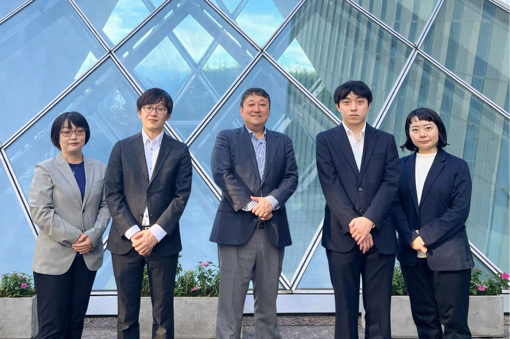
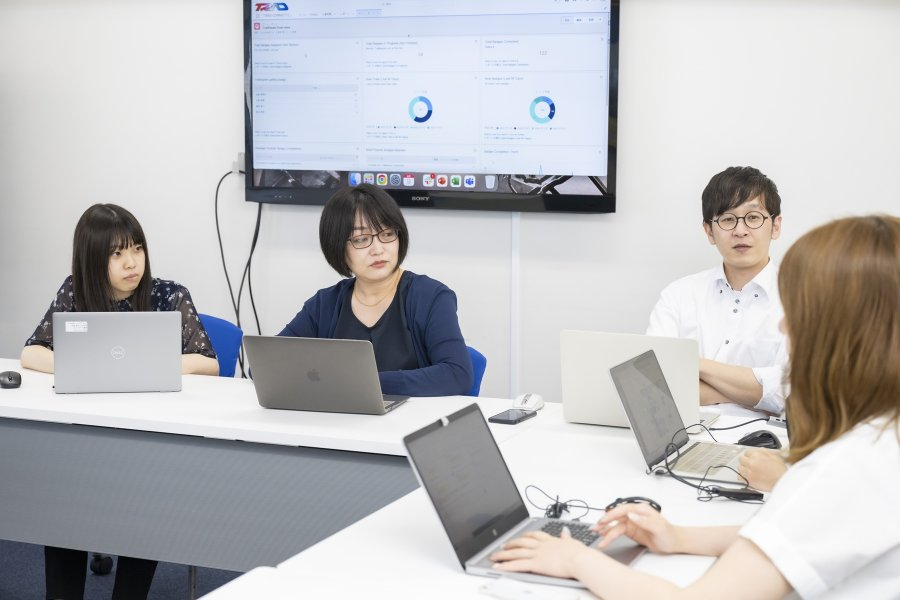
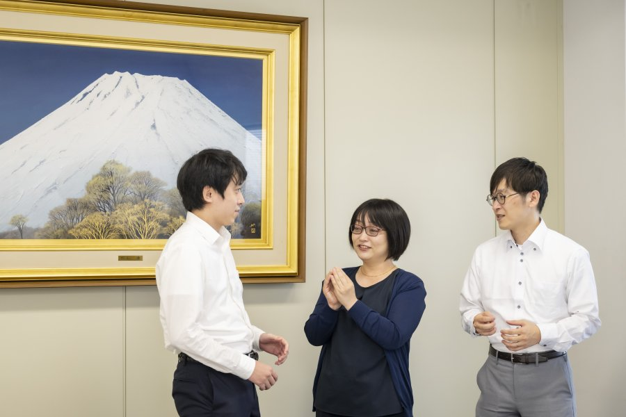
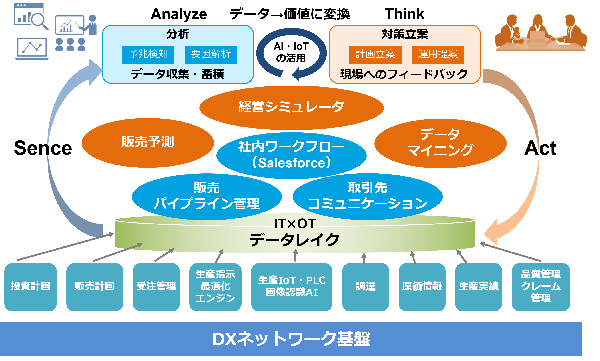
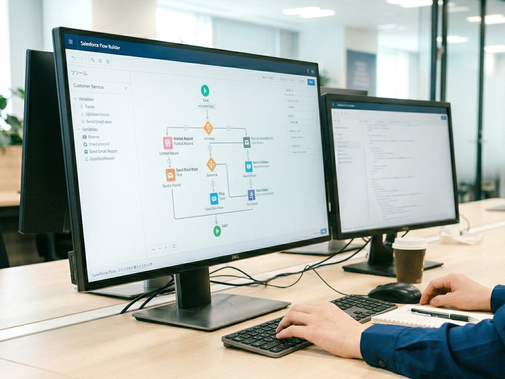
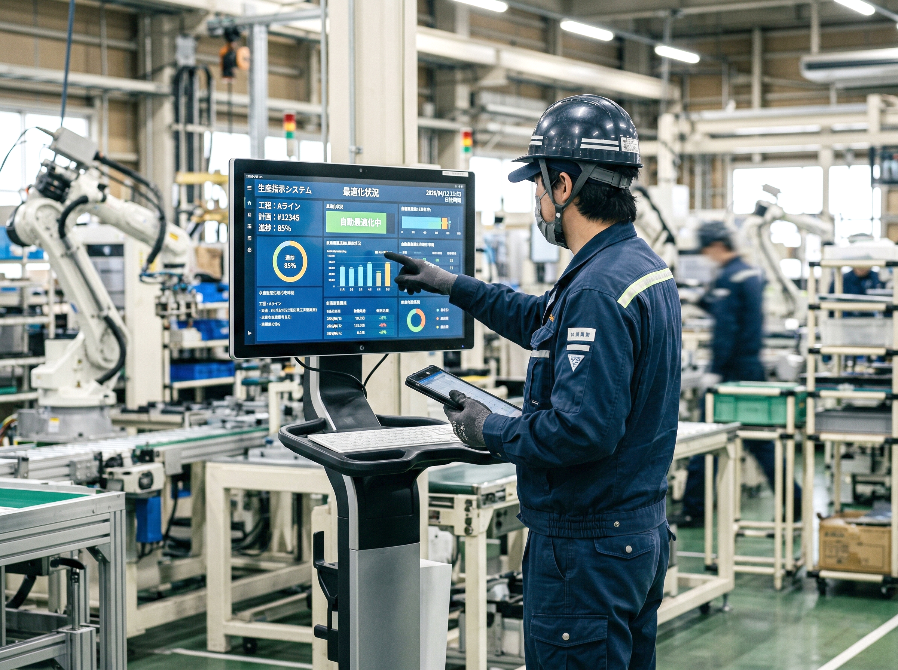
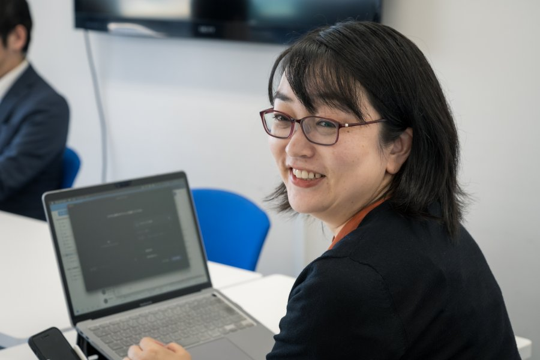

We Keep Challenging Ourselves.
私たちは、製造業DXの
エキスパート集団です。
私たちのミッション
ティラドコネクトは熱交換技術の専門メーカー「株式会社ティラド」のDX推進をミッションとして設立されました。
ティラドが長年培ってきたものづくりのノウハウ・技術をベースに、IoT や AI を活用した新たなITソリューション・サービスを創出します。また、独自開発したアプリケーションやソリューションを世界の製造業・サービス業などに広く提供することで、持続可能な社会に貢献します。



アウトプットとスピード感を重視するベンチャーマインド
ティラドコネクトでは、ティラドの自社エンジニアやパートナー会社と協力して開発を進めており、DXプロジェクト全体に関わるメンバーは１００名を越える体制になっています。これだけの開発プロジェクトを可能にしているのが、ティラドコネクトの誇る開発チームです。
当社の強みの一つが、アーキテクトまで含めた最高峰の開発メンバーが揃っていることです。
自社エンジニアだけではなく、10社ものパートナー会社とコラボレーションを行なっており、ともに協力してDXテーマを推進しています。異なる専門のプロフェッショナルたち同じチームメンバーとして活発に議論を交わし、アジャイル開発を推し進めています。
今まさにティラドコネクトのコアとなるメンバーを募集しており、大きなことにチャレンジしたいという意欲があれば、様々な経験ができる環境だと自負しています。
ティラドコネクトは、「自律」を人材育成の方針として打ち出しており、ベンチャーマインドを持ったスピード感を重視するワークスタイルです。仕事の裁量が広く、働き方もコアタイム以外は自由。徹底した成果主義で、アウトプットを重視する評価制度を確立しています。
「知恵を生み出す人材を育てたい」というのが会社の方針です。基盤力＝コンピテンシー力✕地頭力と考え、メンバー各自の基盤力アップを目指しています。開発の上流工程がメイン業務となるため、コーディングのスキルよりも、ヒアリングや課題抽出、解決策の立案等に必要なスキルを中心に研修を進めています。
大手企業の子会社ですから経営の安定性も抜群！加えて、自由な社風と柔軟な働き方で、個性的なメンバーと楽しく働けます。
一緒に組織を作り上げ、製造業のDXを推進する仲間やパートナーを広く求めています。
取り組みテーマ
DXエキスパートチームによるデジタルファクトリー
Salesforce、AI、IoTソリューションで製造業を変革
ティラドグループの生産管理システムをはじめ、IoTやAIを駆使したデータマイニング、 Salesforceを活用した社内・社外ワークフローの構築など、様々な業界から集まったエキスパートチームが、業務や経営を変革するための様々なテーマに取り組んでいます。

データレイク構築～ 販売予測・経営シミュレーション
現場でリアルタイムに発生するデータをデータレイクに一元管理。経営判断の迅速化や精度向上を目的とし、データに基づいた販売予測や生産性分析などのシステム化に取り組んでいます。
生産性分析等データマイニング
テキストマイニングによる課題分析
Python、SQL、DB：主にPythonによる分析基盤構築
ソフト開発経験者やPythonへチャレンジしてみたい方 初心者可
CODER系ツール活用経験者：テキストマイニングの経験者やこれからテキストマイニングにチャレンジしてみたい方

ワークフロー構築 (Salesforce)
Salesforce構築のエキスパートが在籍し、Salesforceの機能を駆使した先端的なシステム開発や外販パッケージ開発を推進しています。
販売パイプライン管理、社内ワークフロー等
コミュニティクラウドベースでの外部取引先コミュニケーションツール
Salesforceベースでの開発（未経験者もOK：標準オブジェクトからカスタマイズまで技術を修得できます）
Salesforce、コミュニティクラウドベースでの開発（未経験者もOK：標準オブジェクトからカスタマイズまで技術を修得できます）

生産指示最適化
多くの手間がかかり、属人化しがちな生産指示の業務を効率化・最適化すべく、自動化エンジンの開発に取り組んでいます。
生産指示最適化
生産指示自動エンジン開発
Python、Javaなど 未経験者OK。
生産IoTソフトウェア開発
Salesforce構築のエキスパートが在籍し、Salesforceの機能を駆使した先端的なシステム開発や外販パッケージ開発を推進しています。
販売パイプライン管理、社内ワークフロー等
コミュニティクラウドベースでの外部取引先コミュニケーションツール
ラズペリーパイ用ソフトウェアエンジニア：LINUX基礎知識、CorC++言語3年以上
PLCエンジニア：経験3年以上
画像認識、物体認識AI開発エンジニア：チャレンジしたい方、経験者優遇
DXネットワーク基盤構築
海外を含めたネットワーク設計・構築・サポートを行っています。
LAN設計
海外ネットワーク構築・保守
LAN設計、海外ネットワーク構築、サポートエンジニア：経験３年以上
製造業向け DXパッケージ外販
ティラドで開発・運用実績のあるDXアプリケーション群を、国内外の企業に外販しています。
販売パイプライン管理、社内ワークフロー等
コミュニティクラウドベースでの外部取引先コミュニケーションツール
生産管理システム
セールスエンジニア（ソリューション営業）
カスタマーサポートエンジニア
先輩インタビュー
ティラドコネクトが最も重要視しているのが、「チャレンジ」と「成長」です。
様々な業界での経験をベースに、製造業を、そして働き方を変えていきたい、
という熱い思いを持つメンバーが集まっています。
塩見悠二
「人を喜ばせる」と 「モノづくり」が原動力 ティラドコネクトでは、システムパッケージは使用されなければ意味がない、と考えます。 モノづくりの未来をより良くするために、もっと人に喜んでもらうために。 ベストなゴールを目指していきたいと思っています。

小泉幸季
言語の壁、文化の壁を、解きほぐすために 新たなITへの興味と、タイでの経験を生かすため、またここから学ぶため、ティラドコネクトへ転職。 現在は子育てをしながら、グローバルなプロジェクトの一員として、海外との言語の壁、文化の壁を解きほぐす調整役として従事しています。